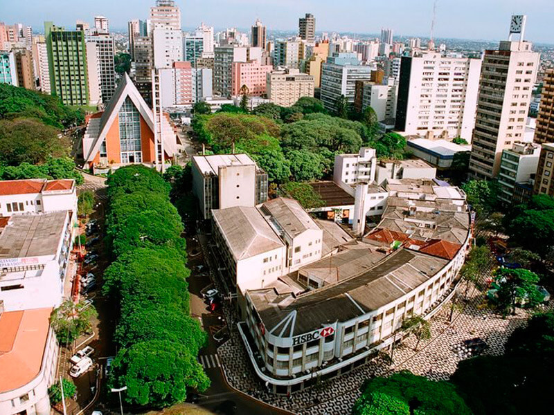
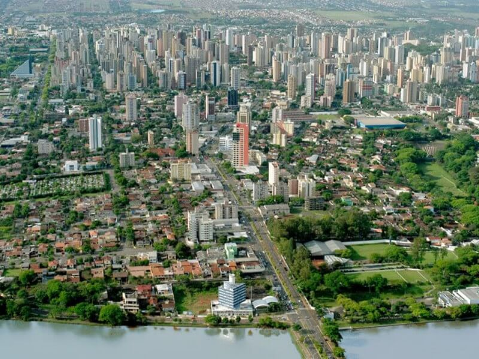
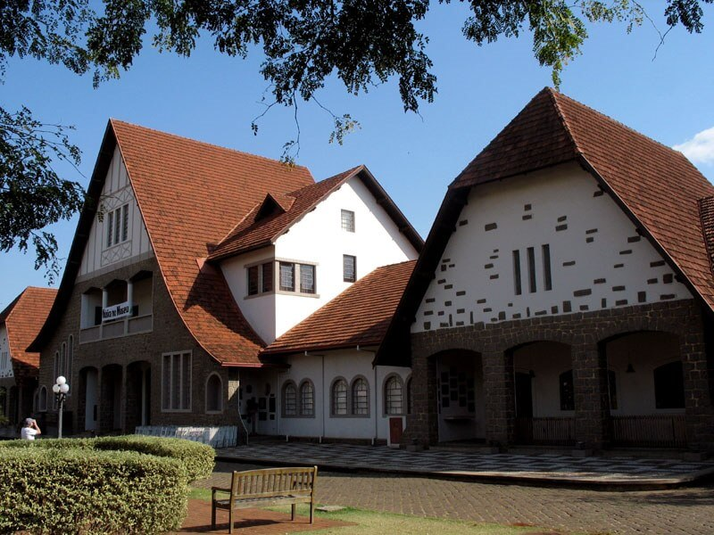
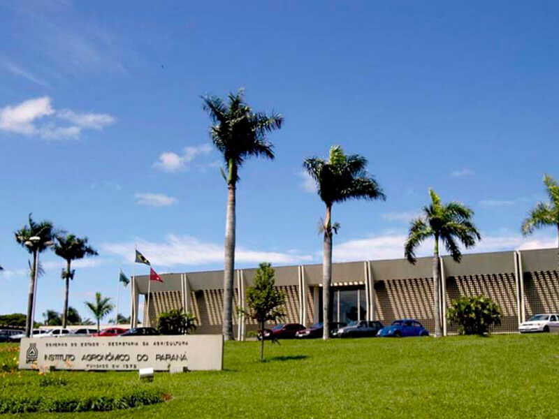

DO BRASIL PARA O MUNDO
O potencial econômico de Londrina acessível para sua Empresa.
Devido a localização privilegiada da matriz da DWL, no centro econômico de Londrina-Paraná Brasil. A DWL possui contatos em diferentes setores econômicos locais, que garantem o sucesso da operação.
Desde o produtor aos serviços de tecnologia de informações. Os setores em destaque na cidade de Londrina são:
AGRONEGÓCIO: A história de Londrina tem base na cultura cafeeira, que até hoje deixa suas marcas na nossa região. Historicamente, o Paraná chegou a ser responsável por 60% do café de todo o planeta, o armazenamento desta produção foi na cidade de Londrina-PR. Onde está localizada a matriz da DWL.
ALIMENTOS: A região também possui uma variedade de empresas de alimentos e bebidas, como massas, café, doces, cachaça, produtos orgânicos, entre outros.
METALMECÂNICO: Empresas de peças, baterias e equipamentos diversos. O que garante a manutenção dos equipamentos.
TIC - Tecnologia da Informação e Comunicação: Cerca de 3.000 empresas na região, a região é destaque nacional pela organização das APLs - Arranjo Produtivos Locais e práticas de inovação.
ALIMENTOS: A região também possui uma variedade de empresas de alimentos e bebidas, como massas, café, doces, cachaça, produtos orgânicos, entre outros.
METALMECÂNICO: Empresas de peças, baterias e equipamentos diversos. O que garante a manutenção dos equipamentos.
TIC - Tecnologia da Informação e Comunicação: Cerca de 3.000 empresas na região, a região é destaque nacional pela organização das APLs - Arranjo Produtivos Locais e práticas de inovação.